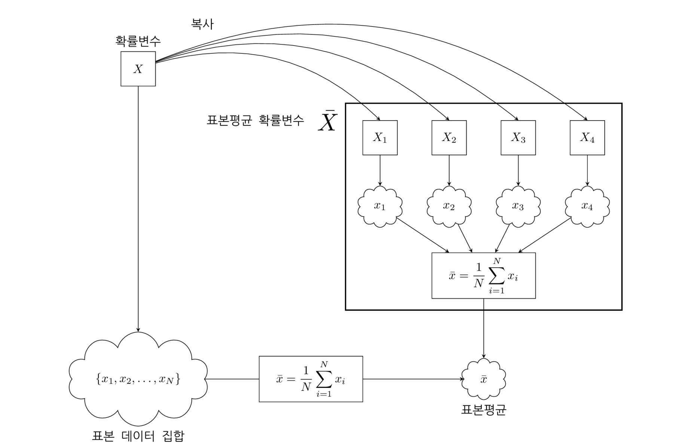

%load_ext tikzmagic
from sympy import *
x = symbols("x")
f = 4/((1 + exp(x+2)) * (1 + exp(-x-2))) + 2/((1 + exp(3*x-6)) * (1 + exp(-3*x+6)))
integrate(f)
(2*exp(-3*x + 6)**(1/3) + 12*exp(4)*exp(-3*x + 6) + 14*exp(4))/(3*exp(-4*x + 8) + 3*exp(-3*x + 6)**(1/3) + 3*exp(4)*exp(-3*x + 6) + 3*exp(4))
%%tikz -p kotex,pgfplots -l arrows.meta,calc,positioning,shapes,datavisualization,datavisualization.formats.functions -g fillbetween -s 2000,1200 -f png
\coordinate (leftbottom) at (-1,-3);
\coordinate (righttop) at (19,10);
\fill[white,use as bounding box] (leftbottom) rectangle (righttop);
\draw[help lines,white] (leftbottom) grid (righttop);
\tikzset{
>=stealth,font={\ttfamily\normalsize},
rv/.style={draw, minimum size=1cm},
data/.style={draw, minimum size=1.2cm, shape aspect=2, cloud}
}
\node[rv, label=확률변수] (X) at (3,8) {$X$};
\node[data, label=below:표본 데이터 집합] (x) at (3,-1) {$\{x_1,x_2,\ldots,x_N\}$};
\draw[->] (X) -- (x);
\draw[line width=1pt] (9,7) rectangle (17,1);
\node[transform shape, scale=2, label=left:표본평균 확률변수] at (8.5,6.5) {$\bar{X}$};
\node[rv] (X1) at (10,6) {$X_1$}; \draw[->] (X) to[bend left] (X1.north);
\node[rv] (X2) at (12,6) {$X_2$}; \draw[->] (X) to[bend left] (X2.north);
\node[rv] (X3) at (14,6) {$X_3$}; \draw[->] (X) to[bend left] (X3.north);
\node[rv] (X4) at (16,6) {$X_4$}; \draw[->] (X) to[bend left] node[pos=0.1, above=0.3] {복사} (X4.north);
\node[data] (x1) at (10,4) {$x_1$}; \draw[->] (X1) -- (x1);
\node[data] (x2) at (12,4) {$x_2$}; \draw[->] (X2) -- (x2);
\node[data] (x3) at (14,4) {$x_3$}; \draw[->] (X3) -- (x3);
\node[data] (x4) at (16,4) {$x_4$}; \draw[->] (X4) -- (x4);
\node[draw, minimum width=3cm, minimum height=1cm] (f) at (13,2) {$\displaystyle \bar{x}=\frac{1}{N}\sum_{i=1}^N x_i$};
\draw[->] (x1) -- (f);
\draw[->] (x2) -- (f);
\draw[->] (x3) -- (f);
\draw[->] (x4) -- (f);
\node[data, label=below:표본평균] (xbar) at (13,-1) {$\bar{x}$};
\draw[->] (f) -- (xbar);
\node[draw, minimum width=3cm, minimum height=1cm] (f1) at (8,-1) {$\displaystyle \bar{x}=\frac{1}{N}\sum_{i=1}^N x_i$};
\draw[->] (x) -- (f1) -- (xbar);
